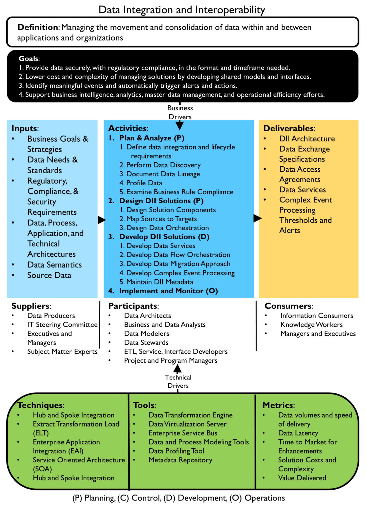

数据集成与交换（Data Integration & Interoperability）¶  Gobblin¶ Constructs¶ Source and Extractor Converter Quality Checker Fork Operator Data Writer Data Publisher DataX¶ Job、TaskGroup、Task Reader—>Channel—>Writer Reference¶ Gobblin Docs DataX